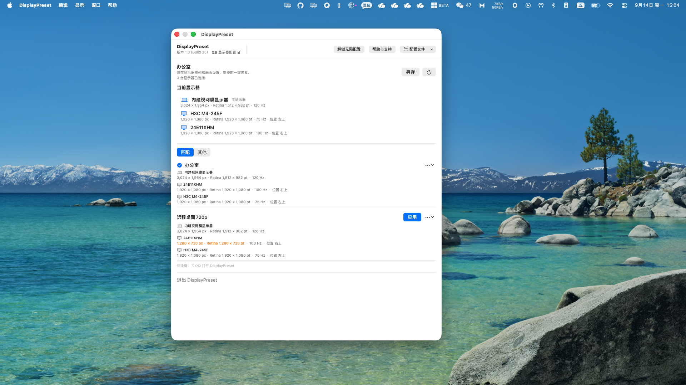

显示器配置
为 Mac 当前连接的显示器保存命名配置，需要时即可恢复。
DisplayPreset 会保存已连接的显示器配置，让你可以一键恢复需要的显示器布局。
以本地使用为主。DisplayPreset 只管理显示器配置。
为 Mac 当前连接的显示器保存命名配置，需要时即可恢复。
配置使用 macOS 提供的显示器信息进行匹配，重新连接同一组显示器后即可快速恢复。
配置保存在你的 Mac 上。需要备份或迁移时，可以导入和导出 JSON 文件。

$0
保存和使用一个显示器配置。
$1.99
一次性购买，保存任意数量的显示器配置。最终价格以 App Store 显示为准。